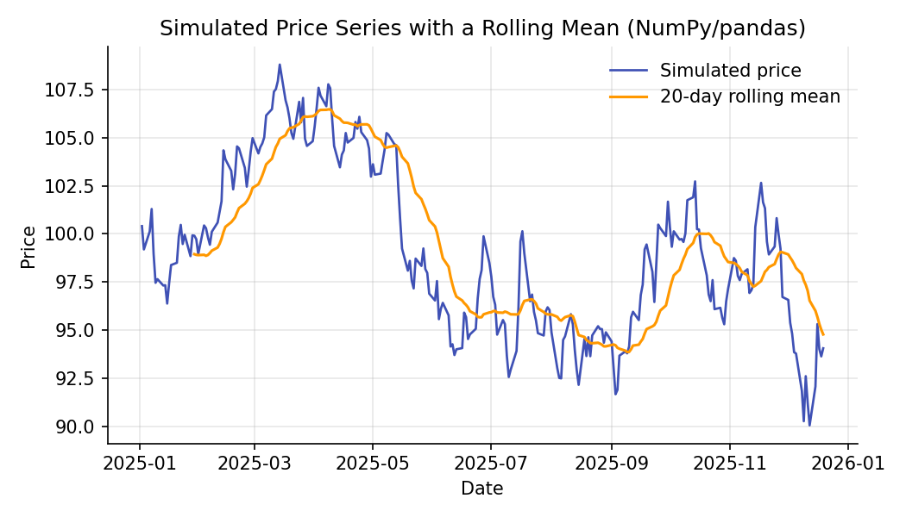

Python, NumPy & Pandas for Quantitative Finance¶
Learning objectives
By the end of this lecture you should be able to:
- [ ] Explain why vectorized array operations (NumPy) replace explicit loops in quantitative finance code
- [ ] Represent a price series as a pandas
Series/DataFrameindexed by date, and compute returns and rolling statistics from it - [ ] Distinguish vectorized, index-aligned pandas arithmetic from naive Python loops, and explain why the distinction matters for correctness and speed
- [ ] Read and reproduce the specific NumPy/pandas idioms used throughout the rest of this curriculum
1. Intuition¶
Every later lecture in this curriculum — Black-Scholes pricing, GARCH volatility, portfolio optimization, backtesting — is expressed as operations on arrays of numbers indexed by time: a price series, a return series, a covariance matrix. Two libraries make this practical in Python:
- NumPy gives you the array (
ndarray) as a first-class object, with arithmetic that operates on the whole array at once ("vectorization") instead of element by element in a Pythonforloop. This is not just a convenience — pure-Python loops over daily price data are slow enough to be a real bottleneck, and vectorized NumPy code is typically implemented in compiled C under the hood. - pandas builds on NumPy and adds a labeled index — typically dates — so that when you write
returns = prices / prices.shift(1) - 1, the arithmetic automatically lines up each price with the correct prior price, even if you later merge, resample, or reorder your data.
Financial data is fundamentally a time-indexed array problem, so these two libraries are the computational foundation for everything that follows.
2. Mathematical formulation¶
There isn't new mathematics in this lecture — the goal is a computational vocabulary. Two operations recur constantly enough to formalize now.
Element-wise (vectorized) operation. Given two arrays \( \mathbf{a} = (a_1, \dots, a_n) \) and \( \mathbf{b} = (b_1, \dots, b_n) \), a vectorized binary operation \( \circ \) produces
computed without an explicit Python-level loop.
Lag operator. For a time-indexed series \( x_t \), the lag (shift) operator \( L \) is defined by
so that a one-period simple return can be written compactly as
In pandas, L is implemented by .shift(1), and the whole expression above is computed as a single vectorized line: prices / prices.shift(1) - 1. (Returns themselves are covered in full in the next lecture; here we only need the mechanics.)
3. Derivation¶
There's no derivation to walk through here — instead, walk through why vectorization is faster, since that reasoning explains why NumPy/pandas code looks the way it does.
A Python for loop over a list of length \( n \) executes \( n \) iterations of the Python interpreter, each carrying interpreter overhead (type-checking, dynamic dispatch) on top of the arithmetic itself. NumPy avoids this by:
- Storing the array as a single contiguous block of memory with a fixed data type (e.g., 64-bit float), rather than as \( n \) separate Python objects.
- Dispatching the operation once to a compiled C loop that iterates over that memory block directly, with no per-element Python overhead.
The practical consequence: prices.pct_change() (vectorized) and [prices[i]/prices[i-1] - 1 for i in range(1, len(prices))] (looped) compute the same numbers, but the vectorized version is faster and, more importantly, is the idiom you'll see in every subsequent lecture — so it's worth building the reflex now to reach for it instead of a loop.
4. Worked numerical example¶
Suppose we have five daily closing prices:
By hand, the day-over-day simple returns are:
| From → To | Calculation | Return |
|---|---|---|
| 100.00 → 101.50 | 101.50/100.00 − 1 | +1.50% |
| 101.50 → 99.80 | 99.80/101.50 − 1 | −1.675% |
| 99.80 → 102.30 | 102.30/99.80 − 1 | +2.505% |
| 102.30 → 103.10 | 103.10/102.30 − 1 | +0.782% |
Note there are only 4 returns from 5 prices — the first price has no prior value to compare against, which is exactly what .shift(1) producing a NaN for the first entry reflects.
5. Python implementation¶
import numpy as np
import pandas as pd
# --- 1. NumPy: vectorized arithmetic on raw arrays ---
prices_arr = np.array([100.00, 101.50, 99.80, 102.30, 103.10])
# Vectorized return calculation — no explicit loop
simple_returns = prices_arr[1:] / prices_arr[:-1] - 1
print("NumPy returns:", np.round(simple_returns, 5))
# --- 2. pandas: the same data, but time-indexed ---
dates = pd.date_range("2026-01-02", periods=5, freq="B")
prices = pd.Series(prices_arr, index=dates, name="close")
# Index-aligned arithmetic via .shift(1): pandas' implementation of the lag operator
returns = prices / prices.shift(1) - 1
print(returns.round(5))
# The same calculation has a built-in shortcut:
returns_builtin = prices.pct_change()
assert np.allclose(returns.dropna(), returns_builtin.dropna())
# --- 3. Rolling statistics: a 20-day rolling mean, computed without a loop ---
rng = np.random.default_rng(42)
daily_ret = rng.normal(0.0004, 0.012, 252) # 252 simulated trading days
sim_prices = 100 * np.cumprod(1 + daily_ret)
sim_dates = pd.date_range("2025-01-02", periods=252, freq="B")
s = pd.Series(sim_prices, index=sim_dates)
rolling_mean_20 = s.rolling(window=20).mean()
print(rolling_mean_20.tail())
prices.rolling(window=20).mean() is doing the same conceptual thing as writing a loop that, for every day t, averages days t-19 through t — but again, vectorized and index-aware, and it correctly produces NaN for the first 19 days where a full 20-day window doesn't yet exist.
6. Visualization¶

s.rolling(20).mean(). The rolling mean lags the price and smooths out day-to-day noise — the same mechanic that underlies moving-average trading signals covered in Module 6.7. Financial interpretation¶
Every quantitative task downstream of this lecture — computing a return series, estimating a covariance matrix for portfolio optimization, running a rolling regression for a beta estimate, backtesting a moving-average crossover — is built from exactly the two operations shown here: vectorized arithmetic and shift/rolling operations on a time-indexed series. Getting these idioms right is not a stylistic preference; using .shift() incorrectly (or not at all) is one of the most common sources of look-ahead bias in backtests, a problem covered in depth in Module 6.
8. Common mistakes¶
Common mistake: off-by-one errors with .shift()
prices.shift(1) moves values forward in time (each row now holds yesterday's value), not backward. A common bug is using shift(-1) when shift(1) was intended, which silently leaks future information into a "past" feature — a direct cause of look-ahead bias in a backtest.
Common mistake: mixing NaN handling silently
.pct_change() and .rolling().mean() both produce leading NaN values. Forgetting to .dropna() (or handle NaNs deliberately) before feeding a series into a statistical function can silently distort results, since many NumPy/pandas reductions propagate or mishandle NaN depending on the function used.
Common mistake: looping when a vectorized op exists
Writing a Python for loop to compute something pandas already vectorizes (returns, rolling means, cumulative products) is not just slower — it's also more error-prone, since manual indexing is where off-by-one and misalignment bugs creep in.
9. Exercises¶
- Given the price array
[50, 52, 51, 53.5, 55], compute the simple returns by hand, then verify your answer with both a NumPy vectorized expression andpandas.Series.pct_change(). - Explain, in one sentence, what
prices.shift(2)represents, and write the pandas expression for a two-day return using it. - Using the simulated series in the code above, compute a 5-day rolling standard deviation (
s.rolling(5).std()) and plot it alongside the price. Where do you see it spike, and why?
10. Further reading¶
- The official NumPy Absolute Beginners' Guide
- The official pandas 10 Minutes to pandas user guide
11. References¶
- NumPy Developers. "NumPy Documentation." numpy.org/doc
- pandas Development Team. "pandas Documentation." pandas.pydata.org/docs
- Harris, C. R., Millman, K. J., van der Walt, S. J., et al. (2020). "Array Programming with NumPy." Nature, 585, 357–362.
- McKinney, W. (2010). "Data Structures for Statistical Computing in Python." Proceedings of the 9th Python in Science Conference, 56–61.